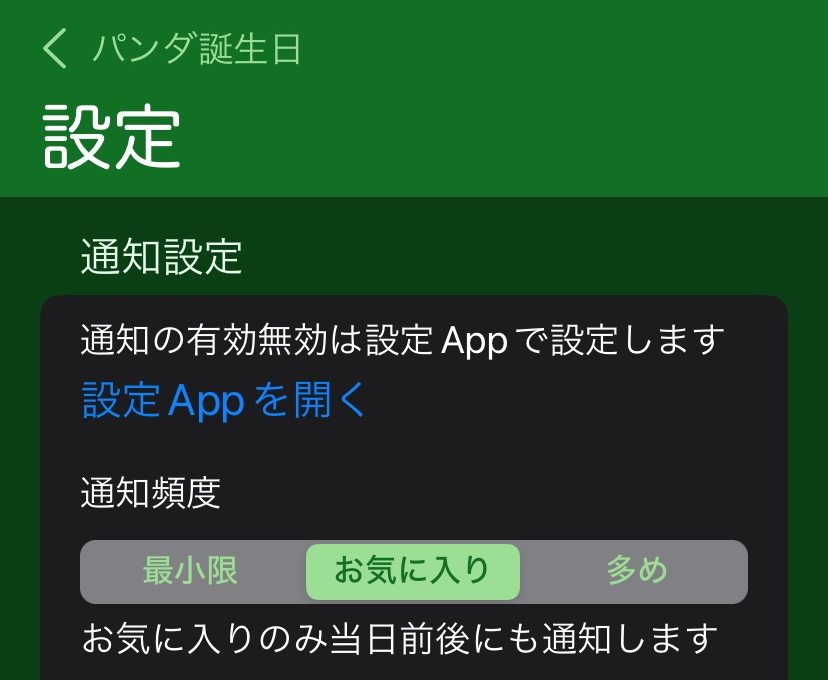

設定画面

- メイン画面などで画面下の歯車アイコンをタップして移動してくる画面です。
- 通知の設定や、登録データの保存、読み込みやリセットなどができます。
画面の説明
- 通知設定
- 通知設定の変更のためには設定Appを開きます。通知の有効・無効を切り替えたいときや通知音のON/OFFを切り替えたいときに使います。
- 通知音が気になるときは設定AppでサウンドをOFFにしてください。
- 通知頻度を３種類から選択できます。
- 最小限
- 誕生日やイベント日の当日のみ通知します。
- お気に入り
- お気に入りのデータのみ当日前後にも通知します。
- 多め
- すべてのデータで当日前後にも通知します。
- 当日前後の通知の例
- 誕生日
- 誕生後1か月後、2か月後など(1年間)
- イベント日
- イベント1年前、2年前など
- 共通
- その年の誕生日・イベント日の1か月前、1週間前など
- 帰国したパンダや亡くなったパンダの誕生日にも通知するかどうか選択できます。
- 表示設定
- 表示に関する設定です。
- メイン画面や詳細画面のパンダ名の横に飛行機(帰国したパンダ)かお墓(亡くなったパンダ)かを示すアイコンを表示するかどうか選択できます。
- 年齢計算するときに亡くなったパンダの年齢は死亡した時の年齢を上限とするかどうか選択できます。
- 新規追加画面や編集画面で死亡日入力表示をするかどうか選択できます。
- 画面カラーのテーマをデフォルト（システム設定依存）かライトテーマかダークテーマにするか選択できます。
- Appデータ読み込み
- Appデータ（プリセットデータ）をネットから再読み込みできます。
- 画像やデータが正しく読み込みできてないように見える時に押してください。
- ユーザー登録ファイル操作
- ユーザーデータをファイルに保存したり読み出したりできるユーザー登録ファイル管理画面を表示できます。
- お気に入りデータをファイルに保存したり読み出したりできるお気に入りファイル管理画面を表示できます。
- ユーザーデータリセット
- 現在Appに登録されているユーザーデータやお気に入りをリセットできます。保存してあるファイルは消えません。
- 一度登録したけど既に使っていないユーザー登録アイコン画像をクリアすることもできます。
- このAPPについて
-
- 今使っているAppのバージョン番号が表示されます。App Store にある最新のバージョンと同じか確認できます。
- 今のアプリのバージョンと今までのバージョン毎の変更内容の履歴を表示できます。
- AppStoreの本Appのページを表示したり、AppStoreのレビューページを直接開けます。
- 本アプリの作者のXのページを開いたり、メールAppを開いて本アプリの作者にフィードバックできます。
- バグやパンダデータの不備のご報告やご感想など、お気軽にご連絡ください。